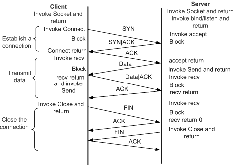

Keyboard shortcuts:
N/СпейсNext Slide
PPrevious Slide
OSlides Overview
ctrl+left clickZoom Element
If you want print version => add '
?print-pdf' at the end of slides URL (remove '#' fragment) and then print.
Like: https://wwwcourses.github.io/...CourseIntro.html?print-pdf
Created for

Iva E. Popova, 2022-2023,

Socket Programming
Socket Programming
Overview
- Socket communication is everywhere. Every HTTP Client/Server Communication rely on socket communication.
- The client application (your browser, for example) uses “client” sockets exclusively. The Web server it’s talking to uses both “server” sockets and “client” sockets.
- Sockets are widely use for any IPC (Inter-Process Communication), especially for cross-platform communication.
Python socket module
- The socket module is a Python's standard interface for the transport layer, and it provides functions for interacting with TCP and UDP, as well as for looking up hostnames through DNS
- A socket is defined by the IP address of the machine, the port on which it listens, and the protocol it uses.
- There are several sockets address families like:
socket.AF_UNIX- used to communicate between processes on the same machine efficiently (specified by UNIX pathname)socket.AF_INET- used for network connections (IPv4)- Sockets are classified into several types, as well:
- stream sockets(socket.SOCK_STREAM) for TCP
- datagram sockets(socket.SOCK_DGRAM) for UDP and others
socket.socket(family=AF_INET, type=SOCK_STREAM)¶
Example: UDP Client-Server
- Note that UDP is a connectionless protocol, so each message send must include destination address
import socket
# open and bind UDP server socket:
server = socket.socket(socket.AF_INET, socket.SOCK_DGRAM)
server.bind(('127.0.0.1', 9999))
print('Serve is listening on 127.0.0.1:9999')
# receive data from a client, max 1024 bytes:
msg,address = server.recvfrom(1024)
print(f"Received from {address}: {msg.decode('utf-8')}")
import socket
# open UDP client socket:
client = socket.socket(socket.AF_INET, socket.SOCK_DGRAM)
# send data to specific address:
client.sendto(b'Hello Server',('127.0.0.1', 9999))
How TCP Connection Works
{kind=link}
Example: TCP Client-Server
- On Server side:
- On Client side:
import socket
# create an IPv4 TCP socket:
server = socket.socket(socket.AF_INET, socket.SOCK_STREAM)
# bind the socket to the host and port
server.bind(('127.0.0.1', 8888))
# listen for incoming connections
server.listen()
print("Server is listening on 127.0.0.1:8888")
# accept a connection
conn, addr = server.accept()
print(f"Connected by {addr}")
# receive data (TCP uses recv, not recvfrom)
data = conn.recv(1024)
print(f"Received: {data.decode()}")
# close the connection
conn.close()
import socket
# open client socket (TCP)
client = socket.socket(socket.AF_INET, socket.SOCK_STREAM)
# connect to the server
client.connect(('127.0.0.1', 8888))
# send data after establishing the connection
client.send(b'Hello Server')
# close the socket
client.close()
Host Name Related Methods
socket.gethostname()- returns the host name of the current system under which the Python interpreter is executed.socket.gethostbyname(hostname)- returns the IP address of the given host
Handling Multiple Clients - Server Example
import socket
import threading
BUFF_SIZE = 1024
FORMAT = 'utf-8'
DISCONNECT_MESSAGE = 'END'
def handle_client(conn, addr):
print(f"[NEW CONNECTION] {addr} connected.")
connected = True
while connected:
msg = conn.recv(BUFF_SIZE).decode(FORMAT).strip()
if msg == DISCONNECT_MESSAGE:
connected = False
print(f"[{addr}] {msg}")
conn.send("Msg received".encode(FORMAT))
conn.close()
# create an IPv4 TCP socket:
server = socket.socket(socket.AF_INET, socket.SOCK_STREAM)
# bind the socket to the host and port
server.bind(('127.0.0.1', 8888))
# listen for incoming connections
server.listen()
print("Server is listening on 127.0.0.1:8888")
def start():
while True:
conn, addr = server.accept()
thread = threading.Thread(target=handle_client, args=(conn, addr))
thread.start()
print(f"[ACTIVE CONNECTIONS] {threading.active_count() - 1}")
start()
Using Sockets on Server
- s.listen() enables a server to s.accept() connections
- accept() blocks and waits for an incoming connection. When a client connects, it returns a new socket object representing the connection and a tuple ((host, port) for IPv4 ) holding the address of the client.
- The newly created socket by s.accept() is used only to communicate with the client. It’s distinct from the listening socket that the server is using to accept new connections
Handling Multiple Clients - Client Example
import socket
BUFF_SIZE = 1024
FORMAT = 'utf-8'
DISCONNECT_MESSAGE = 'END'
def send(client, msg):
message = (msg + "\n").encode(FORMAT)
client.send(message)
print(client.recv(BUFF_SIZE).decode(FORMAT))
# open client socket (TCP)
client = socket.socket(socket.AF_INET, socket.SOCK_STREAM)
# connect to the server
client.connect(('127.0.0.1', 8888))
# send some messages:
while True:
msg = input("Enter a message: ")
if msg == '':
send(client, DISCONNECT_MESSAGE)
break
else:
send(client, msg)
socket.recv() method
- Syntax
- Purpose: Receives data from the socket.
- Parameters:
- buffer_size: Maximum number of bytes to receive.
- Returns: A byte string of data up to the specified buffer_size.
- How it works:
- The function waits for data to arrive from the socket.
- It reads at most buffer_size bytes. If less data is available, it returns only that data. If more data is available, it will need to be called again to read the rest.
socket.recv(buffer_size)
socket.send() method
- Syntax
- Purpose: Sends data to the socket.
- Parameters:
- data: Byte string (must be encoded if sending text).
- Returns: The number of bytes actually sent.
- How it works:
- The function sends the provided data to the connected socket.
- If the socket buffer is full or the network is slow, it might not send all the data at once, so it's important to check how many bytes were actually sent.
socket.send(data)
Byte Strings
- A byte string in Python a sequence of bytes (not characters), and it is written by prefixing a string with a
b. You can also convert a normal string to a byte string using the encode() method. - Direct byte string: Prefix a string with
bto create a byte string. - Convert from a regular string: Use the
encode()method to convert a string to a byte string.
# Direct byte string
byte_string = b"Hello, World!"
# Convert from a regular string
text = "Hello, World!"
byte_string = text.encode('utf-8')
Monitoring TCP connection
Monitoring TCP connection
netstat
- If we want to see all TCP connections we can use the
netstatcommand (available on Windows and Linux ) - Useful options:
-a: Show both listening and non-listening sockets.-n: Show numerical addresses instead of trying to determine symbolic host, port or user names.-t: Show only TCP connections.-p: Show the PID and name of the program to which each socket belongs.
netstat -antp